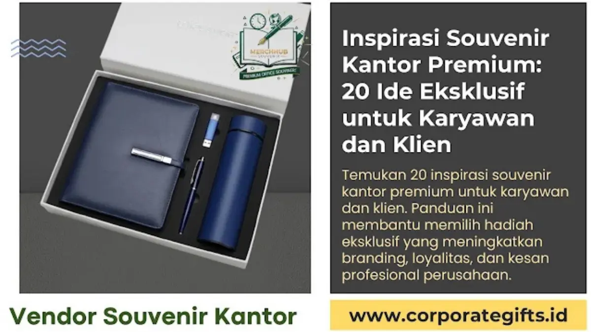

Corporate Gifts ID - Memberikan souvenir kantor bukan sekadar formalitas seremonial. Di tengah persaingan bisnis yang semakin ketat, cinderamata korporat telah bertransformasi menjadi strategi branding yang sangat elegan sekaligus instrumen vital dalam merawat hubungan kemitraan jangka panjang. Bagi klien bisnis maupun karyawan internal, pemberian souvenir kantor premium menciptakan impresi profesionalisme tinggi, rasa dihargai, dan citra eksklusif yang sulit terlupakan.
Souvenir kantor premium adalah kumpulan hadiah eksklusif mulai dari pulpen ukir laser logam, tumbler vacuum insulated SUS 304, powerbank fast charging, hingga paket gift set korporat terpadu. Hadiah-hadiah ini dirancang khusus untuk mempertegas identitas merek dan memperkuat ikatan emosional para pemangku kepentingan.
Pentingnya Memilih Souvenir Kantor Premium yang Tepat
Souvenir premium memiliki dampak strategis yang jauh melampaui biaya produksinya. Produk merchandise berkualitas tinggi tidak hanya membuat penerima merasa teristimewakan, tetapi secara langsung mendongkrak reputasi dan kredibilitas brand Anda di mata publik. Berdasarkan data riset dari Promotional Products Association International (PPAI), sebanyak 79% penerima merchandise korporat memiliki persepsi yang jauh lebih positif terhadap perusahaan yang memberikan cinderamata berkualitas.
Pemberian souvenir yang dirancang secara matang memberikan tiga manfaat utama:
- Meningkatkan Loyalitas Klien dan Mitra: Menunjukkan komitmen jangka panjang dalam kemitraan bisnis melalui hadiah bernilai guna tinggi.
- Apresiasi Nyata bagi Karyawan: Menumbuhkan rasa bangga dan kepemilikan (sense of belonging) terhadap tempat kerja.
- Memperpanjang Brand Exposure: Produk yang digunakan berulang kali dalam aktivitas kantor sehari-hari bertindak sebagai media promosi pasif yang bekerja terus-menerus.
Poin Kunci Dampak Strategis Souvenir Premium:
- Investasi Jangka Panjang: Souvenir premium memiliki lifespan penggunaan hingga bertahun-tahun, melipatgandakan ROI promosi.
- Sentuhan Personalisasi: Teknik grafir nama personal pada setiap produk meningkatkan nilai emosional penerima secara drastis.
- Representasi Kualitas: Mutu material produk mencerminkan standar profesionalisme dan integritas layanan bisnis Anda.
20 Ide Souvenir Kantor Premium untuk Karyawan dan Klien
Berikut adalah kurasi 20 inspirasi souvenir kantor eksklusif yang dirancang untuk menjawab berbagai kebutuhan acara bisnis modern, onboarding eksekutif, hingga apresiasi klien VIP:
- Pulpen Logam Premium Berukir Nama: Pilihan klasik yang memancarkan kesan profesional dan elegan, sangat ideal dipersonalisasi dengan laser engraving nama penerima serta logo perusahaan.
- Agenda Kulit Eksklusif (Leather Notebook): Dilengkapi sampul berbahan PU leather dengan teknik cetak logo deboss, sangat cocok untuk mendampingi rapat eksekutif jajaran manajemen dan klien VIP.
- Gift Set Corporate Elegan: Kombinasi terpadu dalam satu boks rigid hardbox mewah (berisi pulpen metal, tumbler stainless, dan agenda kulit) yang siap diserahkan pada acara kenegaraan atau penandatanganan kerja sama resmi.
- Tumbler Stainless SUS 304 Vacuum Insulated: Pilihan praktis, higienis, dan ramah lingkungan yang mampu menjaga suhu minuman panas maupun dingin hingga 12 jam. Sangat diminati oleh karyawan dan mitra kerja dinamis.
- Powerbank Fast Charging Berlogo: Perangkat pengisi daya portabel berkapasitas besar dengan fitur pengisian cepat yang sangat menunjang mobilitas kerja para profesional di luar kantor.
- Wireless Charger Stand Modern: Aksesori meja kerja nirkabel kekinian yang memberikan kesan bahwa korporasi Anda adaptif dan terdepan dalam mengadopsi teknologi digital.
- Speaker Bluetooth Mini Portabel: Menghadirkan kesan mewah, modern, dan serbaguna, sangat digemari oleh generasi profesional muda serta mitra bisnis kreatif.
- Desk Organizer Kayu atau Logam: Rak mini penata perlengkapan kerja yang membantu merapikan meja sekaligus mempercantik estetika ruang kerja kantor penerima.
- Jam Meja Digital Custom Logo: Elegan, fungsional, dan memberikan visibilitas merek yang konstan karena selalu berada di hadapan pengguna setiap hari kerja.
- Paket Kopi Single Origin & Artisan Tea: Pilihan hampers minuman seduh premium dalam kemasan boks eksklusif yang mencerminkan kehangatan serta apresiasi mendalam perusahaan.
- Cokelat Artisan Eksklusif: Bingkisan bercita rasa manis dan personal, sangat pas untuk melengkapi perayaan hari jadi perusahaan (company anniversary) atau bingkisan akhir tahun.
- Tote Bag Kulit PU Premium: Tas kerja bermaterial kokoh dan berpenampilan modis, berfungsi sebagai tas laptop ringan pengganti goodie bag konvensional.
- Aromatherapy & Reed Diffuser Set: Sentuhan hadiah personal yang berfokus pada kenyamanan suasana ruang kerja dan relaksasi pikiran karyawan maupun klien.
- Flashdisk Kartu USB Drive Logam: Media penyimpanan data berkapasitas besar yang dikemas dalam boks kaleng atau kotak magnetik dengan grafir logo presisi.
- Souvenir Ramah Lingkungan (Eco-Friendly Kit): Set perlengkapan makan bambu organik, botol kaca borosilikat, atau buku catatan daur ulang yang mempertegas komitmen keberlanjutan (ESG) korporasi.
- Headset / TWS Bluetooth Premium: Solusi audio nirkabel dengan mikrofon jernih, sangat berguna untuk mendukung kebutuhan rapat virtual harian secara fleksibel.
- Smart Tumbler dengan Indikator Suhu LED: Botol minum pintar dengan sensor sentuh layar LED pada tutup botol yang menampilkan temperatur cairan secara real-time.
- Plakat / Mini Trophy Akrilik Kristal: Simbol penghargaan bernilai prestise tinggi dengan ukiran 3D untuk mengapresiasi loyalitas dan prestasi gemilang karyawan.
- Voucher Gift Premium dalam Amplop Emboss: Alternatif cinderamata fleksibel berdesain mewah yang memberikan kebebasan bagi penerima untuk memilih hadiah impian mereka sendiri.
- Produk Kriya Lokal Berkualitas Ekspor: Kain batik sutra cap, kerajinan kulit tatah, atau ornamen etnik nusantara yang dikemas modern untuk mendukung produk dalam negeri.

Pilihan paket souvenir kantor custom kombinasi agenda kulit, pulpen metal, flashdisk, dan smart tumbler dengan die-cut foam presisi.
Matriks Klasifikasi Souvenir Premium Berdasarkan Target Audiens
Untuk memudahkan proses kurasi pengadaan, berikut adalah tabel klasifikasi jenis souvenir kantor premium berdasarkan kategori audiens dan tujuan strategis perusahaan:
| Target Audiens | Rekomendasi Souvenir | Teknik Kustomisasi | Tujuan Utama |
|---|---|---|---|
| Klien VIP & Komisaris | Executive Gift Set, Plakat Kristal 3D, Agenda Kulit Deboss | Laser Grafir Nama, Hot Print Emas, Hardbox Bludru | Membangun relasi prestisius & kemitraan jangka panjang |
| Karyawan Berprestasi | Smart Tumbler LED, TWS Bluetooth, Mini Trophy Custom | Digital UV Printing, Grafir Laser | Apresiasi kinerja & meningkatkan retensi talenta |
| Mitra Bisnis & Rekan Kerja | Powerbank Fast Charging, Pulpen Logam, Desk Organizer | Laser Engraving, Sablon Presisi | Meningkatkan brand recall dalam aktivitas harian |
| Peserta Onboarding Karyawan | Welcome Kit (Tumbler SUS 304, Lanyard, Flashdisk Kartu) | Sablon High Density, Print UV Full Color | Menciptakan budaya perusahaan positif sejak hari pertama |
Tips Memilih Souvenir Kantor Premium agar Tepat Sasaran
Memilih cinderamata kantor bernilai tinggi membutuhkan perencanaan terstruktur. Berikut adalah lima pertimbangan krusial agar alokasi anggaran promosi memberikan hasil yang optimal:
- Kenali Profil Demografis Penerima: Pendekatan hadiah untuk direksi C-level tentu berbeda dengan merchandise untuk generasi profesional milenial atau tim lapangan. Sesuaikan selera dan kebutuhan fungsi mereka.
- Prioritaskan Nilai Guna dan Ketahanan: Pilihlah barang yang memiliki fungsi praktis jangka panjang agar tidak berakhir sebagai pajangan tak terpakai di laci meja.
- Selaraskan dengan Identitas Brand Korporat: Pemilihan palet warna, tipografi logo, dan material kemasan harus mencerminkan visi serta standar profesionalisme perusahaan Anda.
- Rencanakan Anggaran & Estimasi Kuantitas: Manfaatkan skala efisiensi produksi (economy of scale) dengan memesan sesuai kebutuhan tahunan untuk mendapatkan penawaran harga per unit yang lebih bersahabat.
- Pilih Vendor Pengadaan Terpercaya: Pastikan bermitra dengan vendor spesialis yang menjamin kualitas bahan baku, ketepatan waktu produksi, serta kelengkapan legalitas dan faktur pajak resmi.
Kesimpulan
Memberikan souvenir kantor premium merupakan langkah strategis yang memadukan apresiasi personal dan pemasaran korporat secara harmonis. Hadiah yang dipilih dengan cermat dan diproduksi secara profesional akan terus menggaungkan reputasi brand Anda dalam memori penerima setiap harinya.
Wujudkan kebutuhan cinderamata korporat eksklusif Anda bersama CorporateGifts.ID. Kami siap membantu mulai dari konsultasi ide produk, pembuatan sampel mockup visual gratis, hingga distribusi pengiriman aman ke seluruh kota di Indonesia.